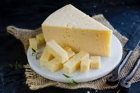

Det här är min ostsida, och jag älskar ost. En sak som är så bra med ost är att det finns så många olika sorters ost, alla möjliga tänkbara sortars ostar. Som Permesan, Cheddar, Manchego, Svecia, Havarti, Herrgård, Greve, Gräddost, och Ostburgare.

Eller så har man Prästost som favorit, mmm. Den grynpipiga hårdosten med 50%fett och tillverkades ursprungligen
av tiondemjölk på prästgårdar i småland